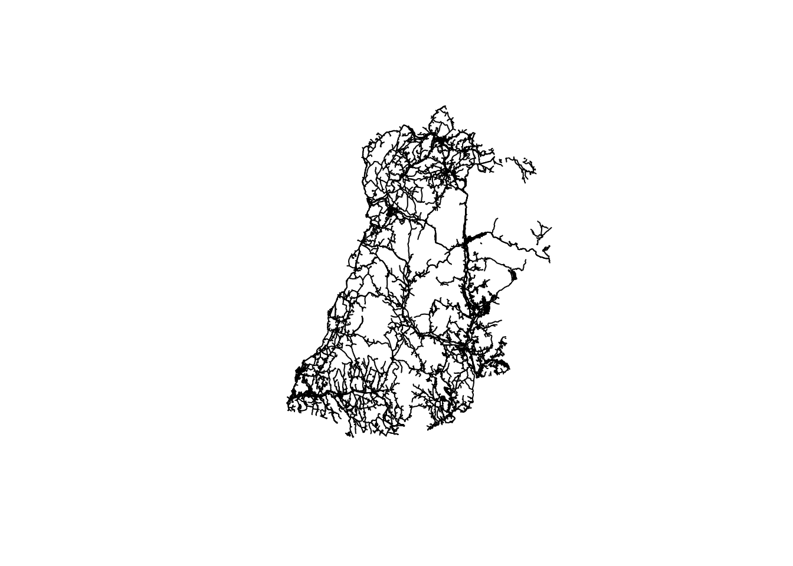
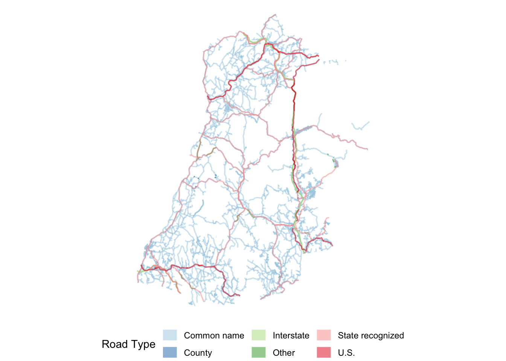
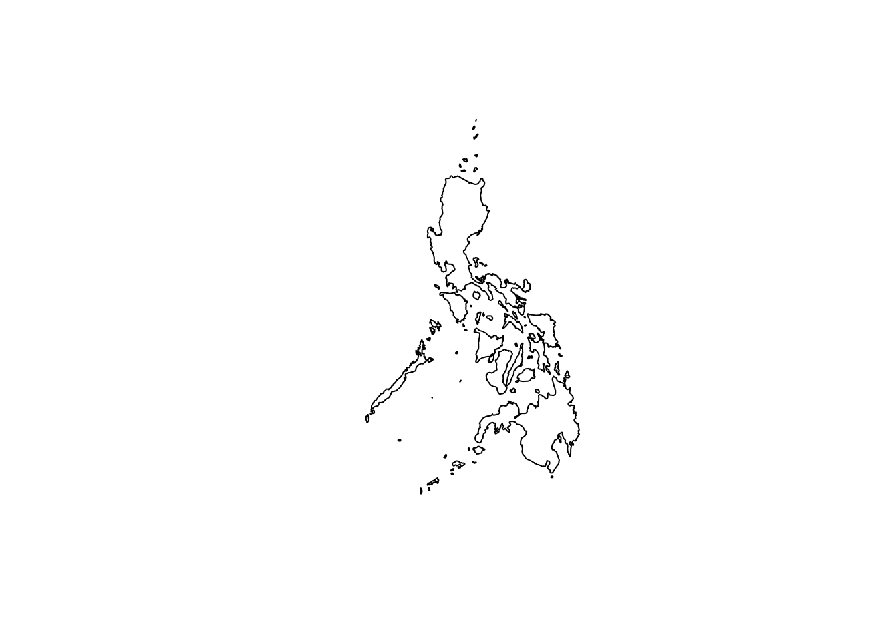

graph BT
A[GeometryCollection]
MP(MultiPoint) --> A
ML(MultiLineString) --> A
MPLY(MultiPolygon) --> A
P(Point) --> MP
L(LineString) --> ML
PLY(Polygon) --> MPLY
Hey, fellow programmers and geospatial nerds. Josiah here. It’s been a while since my last video. The subject for this video is one a topic that feels so rudimentary, but is often skipped over. It’s a fundamental that folks like myself don’t truly learn until later in life. It’s got to do with vector data: points lines and polygons.
I’ve been doing geospatial analysis in some way, shape, or form since 2014. Only recently have I felt I truly understood vector data. We’re going to walk through the simple feature standard from the Open Geospatial Consortium (OGC).
The OGC is a neutral organization who’s sole purpose is to bolster and organize the geospatial community through “publicly available and open standards” that drive innovation and ensure interoperability across tech stacks.1
Let’s think about all the different types of data we can gather about the world around us: locations of cities, roads, UFO sightings, rivers, houses, and quite literally anything that can be observed in the world around us (including things on other planets). All of this data can be represented by simple geometry features such as points, lines, and polygons. The Simple Feature Standard gives us a way to do that. The SF standard makes it easy to describe geometries in a consistent way using geometric primitives so that they can be understood no matter what programming language or software is being used.
A geometric primitive is an atomic unit. It is the smallest unit that a shape can be broken down into. Geometric primitives are the building blocks for all other geometries.
“This standard enumerates the requirements for defining and representing geographic features in geographic information systems, applications and transmittable data formats.”
The simple feature standard (SF) defines how vector data is recorded and transmitted. Of course data need to be recorded and transmitted, but is a whole standard really necessary? What does it mean to be a standard and why are they important? Well, that gets to the core of why the OGC exists if you ask me.
There could, and maybe should, be a whole video dedicated to the OGC and the work that they do. I’ll provide links in the description and this will be available as a blog on my website.
OGC standards formalize how something should be built, function, or behave. Because they are generally agreed upon and fairly exhaustive, they ensure that users can expect the same behavior regardless of what tool or language they may be using. Standards are critical for the open source community and commercial entities that rely upon open source. These standards define, in words, how software should behave.
The simple feature (SF) standard is broken up into two parts. The first defines the “common architecture” and the second defines how a SQL interface should interact with the simple features. We don’t care about SQL today. Only about the first part.
We’re going to get quite specific. So get ready for a journey.
Every shape that we work with is composed of other geometric units. These other units are the smallest composible unit we work with. They are called geometric primitives. When working with points, lines, and polygons, there is only one primitive that we use. Points. Points are the building blocks of (almost) every single geometry that we work with.
For the whiz kids out there: I’m referring only to the common geometry objects Point, Line/LineString, Polygon and their Multi-types.
Point’s are defined by at least two values and up to four. The first two are the most important: the X and Y coordinates. A simple point looks like Point (X Y). Where X and Y are floating point numbers (they have decimals) representing the respective dimensions. Point have two other optional dimensions Z and M.
Z is used for 3-dimensional data. It represents the altitude (height) of a point. For example, the peak of Mount Washington is located at Point (-71.3 44.3) but that ignores the height of the peak which is 6,289. If we wanted to record the elevation that might look like Point (-71.3 44.3 6289).
The M dimension is for a measurement. Mount Washington is known for being ridiculously cold. This year it broke it’s own previous record and clocked in a -108° F measurement. We can actually encode this into a single point measurement. Point (-71.3 44.3 6289 -108).
The Z and M measurements are exceptionally useful, but less common. Though they are seeing increased use as 3-dimensional data becomes more and more available. For the remainder we’ll only consider points in 2 dimensions.
From points we can create geometric objects. Geometric objects represent a single thing—like an intersection location, the path of a river, or the shape of a building. These are all represented by a single geometric objects.
A Point is the most basic geometric object because it is also a geometric primitive.
Image of a point (0, 0)
Two Points connect to make a Line.
Animates to connect a line (0, 0), (5, 0).
A Line can only have two points. Whereas the LineString geometric object is defined by two or more points that create a path.
Animation of adding an additional point
“A LineString is a Curve with linear interpolation between Points. Each consecutive pair of Points defines a Line segment.” - SFA Part 1: Common Architecture
It is interpolation and not approximation because the lines must pass through each point.
LineString paths are defined as a sequence of Points. By adding an increasing number of Points, you can make LineStrings extremely detailed.
Animation of increasing the number of vertexes in a polygon from 3 to 100 to approximate a circle
Notice how Points compose LineStrings. Likewise, polygons are composed by LineStrings—though not any old LineString. Polygons are closed shapes so they must be defined by a simple and closed line. Simple and closed LineStrings are called LinearRings.
Image of simple vs non-simple linear ring
LineStrings become closed by adding final closing Point at the starting point. So the starting and the closing point must be identical. There will always be one more point than there are vertexes in polygons.
image of closed LineString
To be “simple”, the line must not intersect (or cross) itself at any point. Think of the shape of a country’s border.
Image of a countries border (bulgaria)
The shape of a polygon must define an enclosed space. The inside of the polygon is the area defined by the exterior ring. But get this: the order of the points in the exterior ring of a polygon matter! Just knowing all of the vertexes in a polygon is not enough. You must also know in which order they go.
picture of creating a closed line by randomly shuffling the order of vertexes. Also going clockwise vs counter clockwise
The exterior ring of a polygon must record each vertex in counter clock-wise order.
Note that this is the same rotation of the unit circle. Can anyone confirm if this is intentional?
This is called the winding order.
Here’s another quirk. Polygons can also have holes inside of them. Think of a land parcel with a pond in it. Should the body of water be included? Sometimes. Sometimes not. For example if one was interested in only the land area it may be best to include it?
Polygon holes also must be closed and simple LinearRings. But here’s the catch: they have a different winding order. Interior rings, or holes, are recorded with a clockwise winding.
animation of creating a polygon with CCW exterior ring and a CW interrior ring
We’ve now built up each of the major geometric objects from Points to Polygons and have seen how smaller units build into larger ones. This concept of making one geometry from another extends into the concept of a GeometryCollection.
GeometryCollections collect multiple geometric objects of any type into one single entity. This alone can be very useful. Though the GeometryCollection actually has three subclasses that are a bit more restrictive.
GeometryCollection subclasses start with the Multi- prefix indicating that it contains multiple objects. The Multi- geometry collections differ from the more general GeometryCollection in that they can contain only one type of geometric object. Each geometric object—Point, LineString, and Polygon—have a corresponding Multi type—MultiPoint, MultiLineString, and MultiPolygon respectively.
graph BT
A[GeometryCollection]
MP(MultiPoint) --> A
ML(MultiLineString) --> A
MPLY(MultiPolygon) --> A
P(Point) --> MP
L(LineString) --> ML
PLY(Polygon) --> MPLY
MultiPointA MultiPoint, for example, is comprised of one ore more points. Say we have three points Point (0 0), Point (1 0), and Point (1 1). Each of these are considered to be a single feature.
A feature refers to any “phenomena”, or thing, that exists in the real physical world.
But what if each of these points were related to each other? Perhaps each point indicates an emergency exit for a single building. It could be quite useful to track these exits as a single feature. Particularly when our data set may contain hundreds or thousands of building emergency exits. In this case we would represent the feature as a MultiPoint ((0 0), (1 0), (1 1)).
animation of 3 points being different colors switching to the same color. perhaps a label of Point() Point() Point() to MultiPoint((), (), ())
MultiLineStringMaybe geometry collections of LineStrings are more natural to think about. Road networks are a great example where MultiLineStrings can be made useful. Roads are classified into different categories. This is the road network of Grafton County, New Hampshire. Not all of these roads are the same type. Some of them are dirt roads that connect to people’s houses and farms. Others are larger two lane roads that act as main thoroughfares, and there are a few interstates interspersed as well.

When we symbolize the road network based on the road type, the differences in type become more apparent.

There are few U.S. roads and interstates whereas the vast majority of the region is covered in “common name” roads. It may make sense to collect each of the road types into a single MultiLineString geometry collection. A MultiLineString, like the MultiPoint, is composed of many LineStrings into a single feature.
MultiPolygonMultiPolygons may be the most common type of geometry collection subclass that we encounter naturally. A really common place where we see multiple polygons being part of the same feature is in political boundaries. Island nations are a really great example of this. Take the Philippines for example.
The Philippines is an archipelago of over 7,000 islands making up an entire nation. Each island is an enclosed polygon. But the collection of polygons is identified collectively as The Philippines.

it would be nice to animate each of these to appear one at a time.
Collecting all of these polygons into a single MultiPolygon is a natural decision given that it represents a single feature.
GeometryCollectionEach of these subtypes restrict the constituent geometry object types. The general GeometryCollection geometry object has no such limitation.
A GeometryCollection is a geometric object that is a collection of some number of geometric objects.
I think of GeometryCollections as a grab bag of miscellaneous geometry objects. And here’s a fun thing thing. Since GeometryCollections are geometry objects they can contain GeometryCollections which can contain another one so on forever and ever—if you ever found an actual use case for them.
Personally, I’ve never found such a use case, or really any uses for a GeometryCollection object other than some intermediate in an analysis.
GEOMETRYCOLLECTION (POLYGON ((0 0, 7 0, 7 5, 0 5, 0 0)), LINESTRING (0 8, 0 0, 9 3, 7 3, 8 5), POINT (0 0))https://www.ogc.org/about/↩︎